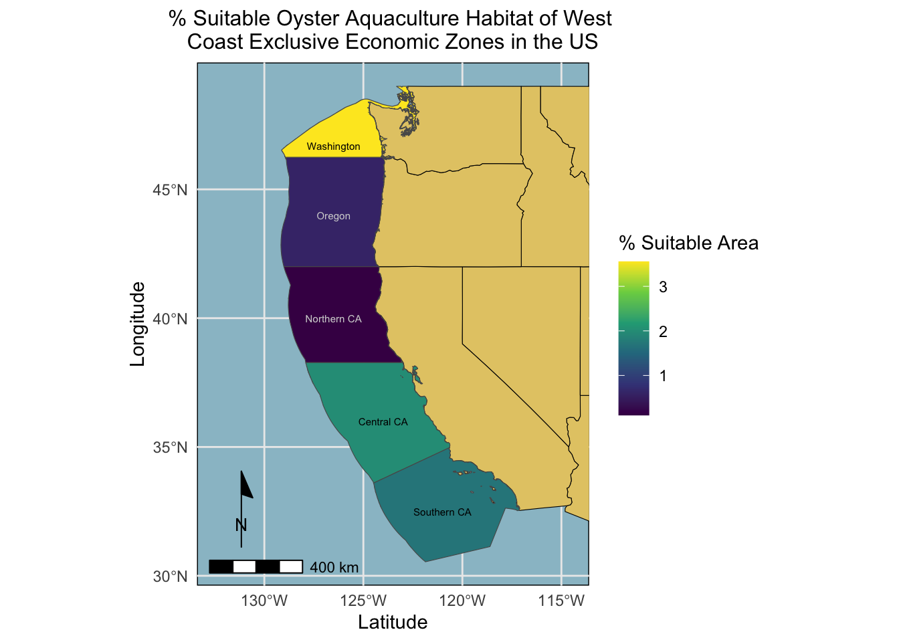
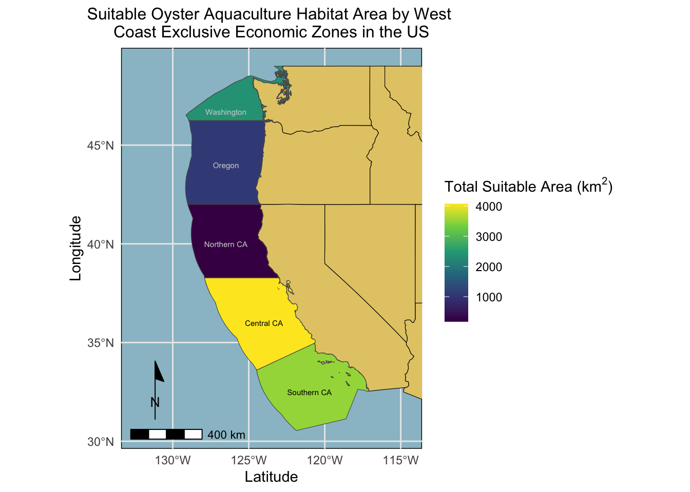

Land based meat production poses serious environmental challenges through its contribution to greenhouse gas (GHG) emissions as well as harsh land use impacts. As society progresses further into uncharted waters with climate change, it is critical that we explore alternative options to mitigate GHG emissions. Marine aquaculture is an important practice that has a high potential to transform the way the global food supply operates as a more sustainable protein option than land-based meat production.1 One important study by Gentry et al. mapped the potential for marine aquaculture globally based on multiple constraints, including ship traffic, dissolved oxygen, and bottom depth .2 This highlighted the true potential of the industry, although it is still far from reaching its capacity.
Objectives
The purpose of this work flow is to utilize spatial analysis tools to understand how we can identify commercial potential of natural resources. In this analysis, I am looking at how to identify potential marine species habitat suitable for aquaculture along the West Coast of the United States in each of its Exclusive Economic Zones (EEZ). I specifically look at habitat requirements across temperature and depth requirements for oysters (a widely commercially available food source) and then create a function from this analysis that can be applied to any west coast species with a given temperature and depth range and potential for aquaculture. This analysis utilizes a variety of spatial analysis tools to for both vector and raster data. These include:
spatial subsetting and joins
raster reclassifiaction
rasterization and vectorization of spatial data
cropping and masking layers
zonal statistics
transforming CRS
utilizing periodic checks
Approach
Based on previous research, we know that oysters need the following conditions in order to reach optimal growth rates: - sea surface temperature: 11-30°C - depth: 0-70 meters below sea level
I used raster and vector data and spatial analysis tools to identify where these ranges overlapped to isolate suitable habitat. Following these steps, I created maps visualizing priority EEZ’s depending on their total and percent suitable aquaculture habitat. I applied this methodology into a function that reproduces the same workflow to find suitable habita for any species with a temperature and depth range that could be potentially grown along the west coast.
Maritime boundaries were designated using Exclusive Economic Zones off of the west coast of US from Marineregions.org.
Analysis
Prepare data
To start, I loaded in and organized all necessary data and made sure it had the correct coordinate reference system. This involved:
reading in the shapefile for the West Coast EEZ (wc_regions_clean.shp)
reading in SST raster data
average_annual_sst_2008.tif
average_annual_sst_2009.tif
average_annual_sst_2010.tif
average_annual_sst_2011.tif
average_annual_sst_2012.tif
combining SST rasters into a raster stack
reading in bathymetry raster (depth.tif)
checking that data are in the same coordinate reference system
code
#loading in and preparing the data in raster format # reading in west coast eez shape file eez <-st_read(file.path(data, "wc_regions_clean.shp"))#read in SST raster data as a stackstack <-rast(c(file.path(data, "average_annual_sst_2008.tif"), file.path(data, "average_annual_sst_2009.tif"), file.path(data, "average_annual_sst_2010.tif"), file.path(data, "average_annual_sst_2011.tif"), file.path(data, "average_annual_sst_2012.tif")))#changing CRSstack <-project(stack, "epsg:4326")#read in bathymetry data bath <-rast(file.path(data, "depth.tif"))# plot(stack)# plot(bath)
Process data
Next, I processed the SST and depth data so that they could be combined. In this case the SST and depth data had slightly different resolutions, extents, and positions. Because I didn’t want to change the underlying depth data, I resampled to match the SST data using the nearest neighbor approach.
The steps I took can be summarized as follows:
Step 1: find the mean SST from 2008-2012
Step 2: convert SST data from Kelvin to Celsius
Step 3: crop depth raster to match the extent of the SST raster (match CRS first)
Step 4: resample the NPP data to match the resolution of the SST datausing the nearest neighbor approach
Step 5: check that the depth and SST match in resolution, extent, and coordinate reference system
I then created a check to ensure that the extent, resolution, and CRS of bathymetry and temperature raster layers matched.
code
# finding mean temperature raster data in celsius and aligning resolutions and extents of rasters#findig mean of sst rastersmean_sst <-mean(stack)# plot(mean_sst)#finding temp in celsiuscels_sst <- mean_sst -273.15#cropping depth raster to sstcrop_bath <-crop(bath, cels_sst)# plot(crop_bath)#resampling bath layer to match resolution of celsiusresamp_bath <-resample(crop_bath, cels_sst, method ="near")# plot(reclass_bath)####### creating a check #######cat("Extent, resolution, and CRS of bathymetry and temprature raster layers match:")
Extent, resolution, and CRS of bathymetry and temprature raster layers match:
code
if(ext(resamp_bath) ==ext(cels_sst) &st_crs(resamp_bath)$epsg ==st_crs(cels_sst)$epsg &# resolution has more than one responses, so we need to make sure that both are true all(res(resamp_bath) ==res(cels_sst))) {cat("TRUE")} else{cat("FALSE")}
TRUE
Finding suitable locations
In order to find suitable locations for marine aquaculture, I first needed to find locations that were suitable in terms of both SST and depth. This involved reclassifying the SST and depth data into locations that are suitable for Oysters by assigning a 1 or a NA value to suitable and unsuitable habitats. I then multiplied the two rasters to look for locations that satisfy both SST and depth conditions (raster cells where 1 values overlapped) using the lapp() function. Lastly, I created a check to ensure that the masked ideal layer only showed overlapping ideal depth and temperature conditions.
code
#reclassifying temperature and bathymetry raster data, and then overlaying the layers to find ideal habitat # reclassify temp raster to NA or 1 if in 11-30C temp range rcl_temp <-classify(cels_sst, rcl =matrix(c(-Inf, 11, NA, 11, 30, 1, 30, Inf, NA), ncol =3, byrow =TRUE))# plot(rcl_temp)# reclassify bathymetry data (0-70 meters below sea level)rcl_bath <-classify(resamp_bath, rcl =matrix(c(-Inf, -70, NA, -70, 0, 1, 0, Inf, NA), ncol =3, byrow =TRUE))# plot(rcl_bath)#creating a raster stackideal_stack <-c(rcl_temp, rcl_bath)#renaming rasters in stacknames(ideal_stack) <-c("temperature", "depth")#creating a multiplication function multiply <-function(x,y){return(x*y)}# multiplying layers to get just cells = 1 (ideal depth and temp )ideal_layer <-lapp(ideal_stack[[c(1,2)]], fun = multiply)# plot(ideal_layer)################### Check ################checking to make sure ideal layer is only showing areas where the temp and depth are in ideal rangecat("Masked ideal layer only shows overlapping ideal depth and temperature conditons:")
Masked ideal layer only shows overlapping ideal depth and temperature conditons:
I first needed to determine the total suitable area within each EEZ in order to rank zones by priority. To do so, I found the total area of suitable locations within each EEZ. The steps in which I approached this can be summarized as such:
Step 1: read in, rasterize, and crop the the eez data to the extent and resolution of the ideal habitat layer
Step 2: calculate the size of each raster cell in km^2
Step 3: sum the tala area of suitable habitat cells using zonal() function
Step 4: join this data with the eez data and create new columns with the total eez area, the toal suitable habitat in each eez, and the percent suitable habitat by eez
code
#here we are calculating the total area of suitable habitat and the percent area of suitable habitat for each EEZ#read in EEZ data eez <-st_read(file.path(data, "wc_regions_clean.shp"))#rasterizing polygon data with ideal locations by region and masking it to ideal locationseez_mask <-rasterize(eez, ideal_layer, field ="rgn") %>% terra::crop(ideal_layer, mask =TRUE)# plot(eez_mask)#find area of raster cells cell_area <-cellSize(eez_mask, unit ="km")# plot(cell_area)#calculate the total area of km2 by regionideal_area <-zonal(cell_area, eez_mask, fun ="sum", na.rm =TRUE)#joining ideal area data w/ eez vector data joined_eez <-left_join(eez, ideal_area, by ="rgn") %>%mutate(ideal_area_km2 = area, perc_ideal = (ideal_area_km2/area_km2)*100, .before = geometry)
Visualize results
Finally, I created two maps showing 1) the total suitable oyster aquaculture habitat area by region, and 2) the percent suitable oyster aquaculture habitat area by region:
code
# pulling in states/base map layer for mapping EEZ'sstates <- us_states#choosing just the west coast regionswest_coast <-st_sf(us_states) %>%filter(REGION =="West") %>%st_transform(crs =st_crs(joined_eez))#plotting the percent suitable area of ideal habitat for oysters for each EEZggplot() +geom_sf(data = west_coast, color ="black", fill ="#E4CA74") +geom_sf(data = joined_eez, aes(fill = perc_ideal)) +scale_fill_viridis_c() +labs(title ="% Suitable Oyster Aquaculture Habitat of West \nCoast Exclusive Economic Zones in the US", y ="Longitude", x ="Latitude", fill =expression("% Suitable Area")) +theme_minimal() +theme(panel.background =element_rect(fill ="lightblue3"), plot.title =element_text(size =12, hjust =0.5)) +# panel.grid.major = element_blank(),# panel.grid.minor = element_blank()) +coord_sf(xlim =c(-132.5, -114.5)) +annotation_scale( location ="bl") +# theme( legend.position= "bottom") +# plot.margin=unit(c(1,6,.5,1),"cm")) +annotation_north_arrow(location ="bl",pad_x =unit(0.05, "in"),pad_y =unit(0.3, "in"),style = ggspatial::north_arrow_minimal()) +annotate("text", x =-121, y =32.5, label ="Southern CA", size =2, color ="black") +annotate("text", x =-124, y =36, label ="Central CA", size =2, color ="black") +annotate("text", x =-126.5, y =40, label ="Northern CA", size =2, color ="lightgrey") +annotate("text", x =-126.5, y =44, label ="Oregon", size =2, color ="lightgrey") +annotate("text", x =-126.5, y =46.7, label ="Washington", size =2, color ="black")

Figure 1. % Suitable Oyster Aquaculture Habitat of West Coast Exclusive Economic Zones in the US. Shows the percent of ideal oyster aquaculture habitat by exclusive economic zones along the west coast. Washington shows the highest % suitable habitat, followed by Central and Southern California.
code
#plotting the total suitable area of ideal habitat for oysters in each EEZggplot() +geom_sf(data = west_coast, color ="black", fill ="#E4CA74") +geom_sf(data = joined_eez, aes(fill = ideal_area_km2)) +scale_fill_viridis_c() +labs(title ="Suitable Oyster Aquaculture Habitat Area by West \nCoast Exclusive Economic Zones in the US", y ="Longitude", x ="Latitude", fill =expression("Total Suitable Area (km"^2*")")) +theme_minimal() +theme(panel.background =element_rect(fill ="lightblue3"), plot.title =element_text(size =12, hjust =0.5)) +# panel.grid.major = element_blank(),# panel.grid.minor = element_blank()) +coord_sf(xlim =c(-132.5, -114.5)) +annotation_scale( location ="bl") +# theme( legend.position= "bottom") +# plot.margin=unit(c(1,6,.5,1),"cm")) +annotation_north_arrow(location ="bl",pad_x =unit(0.05, "in"),pad_y =unit(0.3, "in"),style = ggspatial::north_arrow_minimal()) +annotate("text", x =-121, y =32.5, label ="Southern CA", size =2, color ="black") +annotate("text", x =-124, y =36, label ="Central CA", size =2, color ="black") +annotate("text", x =-126.5, y =40, label ="Northern CA", size =2, color ="lightgrey") +annotate("text", x =-126.5, y =44, label ="Oregon", size =2, color ="lightgrey") +annotate("text", x =-126.5, y =46.7, label ="Washington", size =2, color ="lightgrey")

Figure 2. Suitable Oyster Aquaculture Habitat Area by West Coast Exclusive Economic Zones in the US. Shows the total area (km2) of ideal oyster farming habitat by exclusive economic zones along the West Coast. Central California shows the highest total suitable area, followed by Souther California and Washington.
Expanding to other species
After having identified the potential suitable habitat for oyster aquaculture, I wanted to expand this workflow to easily make maps for other species requirements. I created a function that can accept any species name, temperature, and depth ranges, and it will create two replicated maps for the given species.
code
#creating a function that shows the ideal species habitat using species name, temperature, and depth as inputs ideal_crib_for_a_species <-function(species ="NAME", depth_min, depth_max, temp_min, temp_max) {# depth reclassification rcl_depth <-classify(resamp_bath, rcl =matrix(c(-Inf, depth_min, NA, depth_min, depth_max, 1, depth_max, Inf, NA), ncol =3, byrow =TRUE))#temp reclassification rcl_temp <-classify(cels_sst, rcl =matrix(c(-Inf, temp_min, NA, temp_min, temp_max, 1, temp_max, Inf, NA), ncol =3, byrow =TRUE))#ideal layers stack ideal_stack <-c(rcl_temp, rcl_bath)#ideal layer ideal_layer <-lapp(ideal_stack[[c(1,2)]], fun = multiply)#rasterize eez polygons eez_mask <-rasterize(eez, ideal_layer, field ="rgn") %>% terra::crop(ideal_layer, mask =TRUE)#find area of raster cells cell_area <-cellSize(eez_mask, unit ="km")#calculate the total area of km2 by region ideal_area <-zonal(cell_area, eez_mask, fun ="sum", na.rm =TRUE)#joining ideal area data w/ eez vector data joined_eez <-left_join(eez, ideal_area, by ="rgn") %>%mutate(ideal_area_km2 = area, perc_ideal = (ideal_area_km2/area_km2)*100, .before = geometry)############################# mapping ######################################percent area m1 <-ggplot() +geom_sf(data = west_coast, color ="black", fill ="#E4CA74") +geom_sf(data = joined_eez, aes(fill = perc_ideal)) +scale_fill_viridis_c() +labs(title =paste("% Suitable", species, "Aquaculture Habitat of West \nCoast Exclusive Economic Zones in the US"), y ="Longitude", x ="Latitude", fill =expression("% Suitable Area")) +theme_minimal() +theme(panel.background =element_rect(fill ="lightblue3"), plot.title =element_text(size =12, hjust =0.5)) +coord_sf(xlim =c(-132.5, -114.5)) +annotation_scale( location ="bl") +annotation_north_arrow(location ="bl",pad_x =unit(0.05, "in"),pad_y =unit(0.3, "in"),style = ggspatial::north_arrow_minimal()) +annotate("text", x =-121, y =32.5, label ="Southern CA", size =2, color ="lightgrey") +annotate("text", x =-124, y =36, label ="Central CA", size =2, color ="lightgrey") +annotate("text", x =-126.5, y =40, label ="Northern CA", size =2, color ="lightgrey") +annotate("text", x =-126.5, y =44, label ="Oregon", size =2, color ="lightgrey") +annotate("text", x =-126.5, y =46.7, label ="Washington", size =2, color ="black") ####################################################################################plotting total area m2 <-ggplot() +geom_sf(data = west_coast, color ="black", fill ="#E4CA74") +geom_sf(data = joined_eez, aes(fill = ideal_area_km2)) +scale_fill_viridis_c() +labs(title =paste("Suitable", species, "Aquaculture Habitat Area by West \nCoast Exclusive Economic Zones in the US"), y ="Longitude", x ="Latitude", fill =expression("Total Suitable Area (km"^2*")")) +theme_minimal() +theme(panel.background =element_rect(fill ="lightblue3"), plot.title =element_text(size =12, hjust =0.5)) +# panel.grid.major = element_blank(),# panel.grid.minor = element_blank()) +coord_sf(xlim =c(-132.5, -114.5)) +annotation_scale( location ="bl") +# theme( legend.position= "bottom") +# plot.margin=unit(c(1,6,.5,1),"cm")) +annotation_north_arrow(location ="bl",pad_x =unit(0.05, "in"),pad_y =unit(0.3, "in"),style = ggspatial::north_arrow_minimal()) +annotate("text", x =-121, y =32.5, label ="Southern CA", size =2, color ="lightgrey") +annotate("text", x =-124, y =36, label ="Central CA", size =2, color ="lightgrey") +annotate("text", x =-126.5, y =40, label ="Northern CA", size =2, color ="lightgrey") +annotate("text", x =-126.5, y =44, label ="Oregon", size =2, color ="lightgrey") +annotate("text", x =-126.5, y =46.7, label ="Washington", size =2, color ="black") return(list(m1, m2)) }
I wanted to test out this function on kelp crabs (Pugettia producta) as they are widely dispersed and could potentially make a good candidate for aquaculture. Data on the Kelp Crab was obtained from SeaLifeBase which presents habitat information on thousands of species. Lets take a look:
And there you have it! This is how I used spatial analysis tools in R to figure out where potential oyster (and any other species) aquaculture might be by EEZ along the west coast of the United States.
Footnotes
Hall, S. J., Delaporte, A., Phillips, M. J., Beveridge, M. & O’Keefe, M. Blue Frontiers: Managing the Environmental Costs of Aquaculture (The WorldFish Center, Penang, Malaysia, 2011).↩︎
Gentry, R. R., Froehlich, H. E., Grimm, D., Kareiva, P., Parke, M., Rust, M., Gaines, S. D., & Halpern, B. S. Mapping the global potential for marine aquaculture. Nature Ecology & Evolution, 1, 1317-1324 (2017).↩︎
---title: "Potential Marine Aquaculture Habitat Along the US West Coast"description: "modeling habitat through spatial analysis"author: - name: Raymond Hunter url: https://ramhunte.github.io/date: 12-016-2023# bibliography: references.bib#citation: # url:image: "images/bath.png"categories: [Quarto, R, Spatial] # self-defined categoriesformat: html: code-fold: true code-copy: true code-summary: "code" code-line-numbers: true code-tools: true code-block-border-left: truetoc: truedraft: false # setting this to `true` will prevent your post from appearing on your listing page until you're ready!---[Github Project Repository](https://github.com/ramhunte/marine_aquaculture)## BackgroundLand based meat production poses serious environmental challenges through its contribution to greenhouse gas (GHG) emissions as well as harsh land use impacts. As society progresses further into uncharted waters with climate change, it is critical that we explore alternative options to mitigate GHG emissions. Marine aquaculture is an important practice that has a high potential to transform the way the global food supply operates as a more sustainable protein option than land-based meat production.[^1] One important study by [Gentry et al.](https://www.nature.com/articles/s41559-017-0257-9) mapped the potential for marine aquaculture globally based on multiple constraints, including ship traffic, dissolved oxygen, and bottom depth .[^2] This highlighted the true potential of the industry, although it is still far from reaching its capacity.[^1]: Hall, S. J., Delaporte, A., Phillips, M. J., Beveridge, M. & O'Keefe, M. Blue Frontiers: Managing the Environmental Costs of Aquaculture (The WorldFish Center, Penang, Malaysia, 2011).[^2]: Gentry, R. R., Froehlich, H. E., Grimm, D., Kareiva, P., Parke, M., Rust, M., Gaines, S. D., & Halpern, B. S. Mapping the global potential for marine aquaculture. *Nature Ecology & Evolution*, 1, 1317-1324 (2017).## ObjectivesThe purpose of this work flow is to utilize spatial analysis tools to understand how we can identify commercial potential of natural resources. In this analysis, I am looking at how to identify potential marine species habitat suitable for aquaculture along the West Coast of the United States in each of its Exclusive Economic Zones (EEZ). I specifically look at habitat requirements across temperature and depth requirements for oysters (a widely commercially available food source) and then create a function from this analysis that can be applied to any west coast species with a given temperature and depth range and potential for aquaculture. This analysis utilizes a variety of spatial analysis tools to for both vector and raster data. These include:- spatial subsetting and joins- raster reclassifiaction- rasterization and vectorization of spatial data- cropping and masking layers- zonal statistics- transforming CRS- utilizing periodic checks## ApproachBased on previous research, we know that oysters need the following conditions in order to reach optimal growth rates: - sea surface temperature: 11-30°C - depth: 0-70 meters below sea levelI used raster and vector data and spatial analysis tools to identify where these ranges overlapped to isolate suitable habitat. Following these steps, I created maps visualizing priority EEZ's depending on their total and percent suitable aquaculture habitat. I applied this methodology into a function that reproduces the same workflow to find suitable habita for any species with a temperature and depth range that could be potentially grown along the west coast.### Data#### Sea Surface TemperatureAverage annual sea surface temperature (SST) from the years 2008 to 2012 was used to characterize the average sea surface temperature within the region. The data was originally generated from [NOAA's 5km Daily Global Satellite Sea Surface Temperature Anomaly v3.1](https://coralreefwatch.noaa.gov/product/5km/index_5km_ssta.php).#### BathymetryTo characterize the depth of the ocean I used the [General Bathymetric Chart of the Oceans (GEBCO)](https://www.gebco.net/data_and_products/gridded_bathymetry_data/#area).[^3][^3]: GEBCO Compilation Group (2022) GEBCO_2022 Grid (<doi:10.5285/e0f0bb80-ab44-2739-e053-6c86abc0289c>).#### Exclusive Economic ZonesMaritime boundaries were designated using Exclusive Economic Zones off of the west coast of US from [Marineregions.org](https://www.marineregions.org/eez.php).## Analysis```{r setup, include=TRUE}knitr::opts_chunk$set(echo = TRUE, message = FALSE, warning = FALSE, results = FALSE, fig.align = "center")#necessary packageslibrary(tidyverse)library(ggspatial)library(sf)library(terra)library(spDataLarge)library(spData)library(patchwork)library(scales)``````{r setup, include=FALSE}data <- file.path("/Users/rayhunter/Documents/Bren/Past_Courses/EDS_223/assignments/assignment-4-ramhunte/data")```#### Prepare dataTo start, I loaded in and organized all necessary data and made sure it had the correct coordinate reference system. This involved:- reading in the shapefile for the West Coast EEZ (`wc_regions_clean.shp`)\- reading in SST raster data - `average_annual_sst_2008.tif`\ - `average_annual_sst_2009.tif`\ - `average_annual_sst_2010.tif`\ - `average_annual_sst_2011.tif`\ - `average_annual_sst_2012.tif`\- combining SST rasters into a raster stack- reading in bathymetry raster (`depth.tif`)\- checking that data are in the same coordinate reference system\```{r include=TRUE, warning=FALSE, messages=FALSE, results = FALSE}#loading in and preparing the data in raster format # reading in west coast eez shape file eez <- st_read(file.path(data, "wc_regions_clean.shp"))#read in SST raster data as a stackstack <- rast(c(file.path(data, "average_annual_sst_2008.tif"), file.path(data, "average_annual_sst_2009.tif"), file.path(data, "average_annual_sst_2010.tif"), file.path(data, "average_annual_sst_2011.tif"), file.path(data, "average_annual_sst_2012.tif")))#changing CRSstack <- project(stack, "epsg:4326")#read in bathymetry data bath <- rast(file.path(data, "depth.tif"))# plot(stack)# plot(bath)```#### Process dataNext, I processed the SST and depth data so that they could be combined. In this case the SST and depth data had slightly different resolutions, extents, and positions. Because I didn't want to change the underlying depth data, I resampled to match the SST data using the nearest neighbor approach.The steps I took can be summarized as follows:- Step 1: find the mean SST from 2008-2012\- Step 2: convert SST data from Kelvin to Celsius\- Step 3: crop depth raster to match the extent of the SST raster (match CRS first)- Step 4: resample the NPP data to match the resolution of the SST datausing the nearest neighbor approach\- Step 5: check that the depth and SST match in resolution, extent, and coordinate reference system\I then created a check to ensure that the extent, resolution, and CRS of bathymetry and temperature raster layers matched.```{r processing data, results = TRUE}# finding mean temperature raster data in celsius and aligning resolutions and extents of rasters#findig mean of sst rastersmean_sst <- mean(stack)# plot(mean_sst)#finding temp in celsiuscels_sst <- mean_sst - 273.15#cropping depth raster to sstcrop_bath <- crop(bath, cels_sst)# plot(crop_bath)#resampling bath layer to match resolution of celsiusresamp_bath <- resample(crop_bath, cels_sst, method = "near")# plot(reclass_bath) ####### creating a check #######cat("Extent, resolution, and CRS of bathymetry and temprature raster layers match:")if(ext(resamp_bath) == ext(cels_sst) & st_crs(resamp_bath)$epsg == st_crs(cels_sst)$epsg & # resolution has more than one responses, so we need to make sure that both are true all(res(resamp_bath) == res(cels_sst))) { cat("TRUE")} else{ cat("FALSE")}```#### Finding suitable locationsIn order to find suitable locations for marine aquaculture, I first needed to find locations that were suitable in terms of both SST and depth. This involved reclassifying the SST and depth data into locations that are suitable for Oysters by assigning a `1` or a `NA` value to suitable and unsuitable habitats. I then multiplied the two rasters to look for locations that satisfy both SST and depth conditions (raster cells where `1` values overlapped) using the `lapp()` function. Lastly, I created a check to ensure that the masked ideal layer only showed overlapping ideal depth and temperature conditions.```{r, include=TRUE, results = TRUE}#reclassifying temperature and bathymetry raster data, and then overlaying the layers to find ideal habitat # reclassify temp raster to NA or 1 if in 11-30C temp range rcl_temp <- classify(cels_sst, rcl = matrix(c(-Inf, 11, NA, 11, 30, 1, 30, Inf, NA), ncol = 3, byrow = TRUE))# plot(rcl_temp)# reclassify bathymetry data (0-70 meters below sea level)rcl_bath <- classify(resamp_bath, rcl = matrix(c(-Inf, -70, NA, -70, 0, 1, 0, Inf, NA), ncol = 3, byrow = TRUE))# plot(rcl_bath)#creating a raster stackideal_stack <- c(rcl_temp, rcl_bath)#renaming rasters in stacknames(ideal_stack) <- c("temperature", "depth")#creating a multiplication function multiply <- function(x,y){ return(x*y)}# multiplying layers to get just cells = 1 (ideal depth and temp )ideal_layer <- lapp(ideal_stack[[c(1,2)]], fun = multiply)# plot(ideal_layer) ################### Check ################checking to make sure ideal layer is only showing areas where the temp and depth are in ideal rangecat("Masked ideal layer only shows overlapping ideal depth and temperature conditons:")if(all( values(ideal_layer == 1) == values(ideal_stack[[1]] == 1), values(ideal_layer == 1) == values(ideal_stack[[2]] == 1), na.rm = TRUE)) { cat("TRUE")} else{ cat("FALSE")}```#### Determine the most suitable EEZI first needed to determine the total suitable area within each EEZ in order to rank zones by priority. To do so, I found the total area of suitable locations within each EEZ. The steps in which I approached this can be summarized as such:- Step 1: read in, rasterize, and crop the the eez data to the extent and resolution of the ideal habitat layer- Step 2: calculate the size of each raster cell in km\^2- Step 3: sum the tala area of suitable habitat cells using `zonal()` function- Step 4: join this data with the eez data and create new columns with the total eez area, the toal suitable habitat in each eez, and the percent suitable habitat by eez```{r include=TRUE}#here we are calculating the total area of suitable habitat and the percent area of suitable habitat for each EEZ#read in EEZ data eez <- st_read(file.path(data, "wc_regions_clean.shp"))#rasterizing polygon data with ideal locations by region and masking it to ideal locationseez_mask <- rasterize(eez, ideal_layer, field = "rgn") %>% terra::crop(ideal_layer, mask = TRUE)# plot(eez_mask)#find area of raster cells cell_area <- cellSize(eez_mask, unit = "km")# plot(cell_area)#calculate the total area of km2 by regionideal_area <- zonal(cell_area, eez_mask, fun = "sum", na.rm = TRUE)#joining ideal area data w/ eez vector data joined_eez <- left_join(eez, ideal_area, by = "rgn") %>% mutate(ideal_area_km2 = area, perc_ideal = (ideal_area_km2/area_km2)*100, .before = geometry)```#### Visualize resultsFinally, I created two maps showing 1) the total suitable oyster aquaculture habitat area by region, and 2) the percent suitable oyster aquaculture habitat area by region:```{r, include=TRUE, out.width = "100%", fig.align = "center", fig.cap="**Figure 1. % Suitable Oyster Aquaculture Habitat of \nWest Coast Exclusive Economic Zones in the US**. Shows the percent of ideal oyster aquaculture habitat by exclusive economic zones along the west coast. Washington shows the highest % suitable habitat, followed by Central and Southern California."}# pulling in states/base map layer for mapping EEZ'sstates <- us_states#choosing just the west coast regionswest_coast <- st_sf(us_states) %>% filter(REGION == "West") %>% st_transform(crs = st_crs(joined_eez))#plotting the percent suitable area of ideal habitat for oysters for each EEZggplot() + geom_sf(data = west_coast, color = "black", fill = "#E4CA74") + geom_sf(data = joined_eez, aes(fill = perc_ideal)) + scale_fill_viridis_c() + labs(title = "% Suitable Oyster Aquaculture Habitat of West \nCoast Exclusive Economic Zones in the US", y = "Longitude", x = "Latitude", fill = expression("% Suitable Area")) + theme_minimal() + theme( panel.background = element_rect(fill = "lightblue3"), plot.title = element_text(size = 12, hjust = 0.5)) + # panel.grid.major = element_blank(), # panel.grid.minor = element_blank()) + coord_sf(xlim = c(-132.5, -114.5)) + annotation_scale( location = "bl") + # theme( legend.position= "bottom") + # plot.margin=unit(c(1,6,.5,1),"cm")) + annotation_north_arrow(location = "bl", pad_x = unit(0.05, "in"), pad_y = unit(0.3, "in"), style = ggspatial::north_arrow_minimal()) + annotate("text", x = -121, y = 32.5, label = "Southern CA", size = 2, color = "black") + annotate("text", x = -124, y = 36, label = "Central CA", size = 2, color = "black") + annotate("text", x = -126.5, y = 40, label = "Northern CA", size = 2, color = "lightgrey") + annotate("text", x = -126.5, y = 44, label = "Oregon", size = 2, color = "lightgrey") + annotate("text", x = -126.5, y = 46.7, label = "Washington", size = 2, color = "black") ``````{r, include = TRUE, out.width = "100%", fig.align = "center", fig.cap = "**Figure 2. Suitable Oyster Aquaculture Habitat Area by West \nCoast Exclusive Economic Zones in the US**. Shows the total area (km^2^) of ideal oyster farming habitat by exclusive economic zones along the West Coast. Central California shows the highest total suitable area, followed by Souther California and Washington."}#plotting the total suitable area of ideal habitat for oysters in each EEZggplot() + geom_sf(data = west_coast, color = "black", fill = "#E4CA74") + geom_sf(data = joined_eez, aes(fill = ideal_area_km2)) + scale_fill_viridis_c() + labs(title = "Suitable Oyster Aquaculture Habitat Area by West \nCoast Exclusive Economic Zones in the US", y = "Longitude", x = "Latitude", fill = expression("Total Suitable Area (km"^2*")")) + theme_minimal() + theme( panel.background = element_rect(fill = "lightblue3"), plot.title = element_text(size = 12, hjust = 0.5)) + # panel.grid.major = element_blank(), # panel.grid.minor = element_blank()) + coord_sf(xlim = c(-132.5, -114.5)) + annotation_scale( location = "bl") + # theme( legend.position= "bottom") + # plot.margin=unit(c(1,6,.5,1),"cm")) + annotation_north_arrow(location = "bl", pad_x = unit(0.05, "in"), pad_y = unit(0.3, "in"), style = ggspatial::north_arrow_minimal()) + annotate("text", x = -121, y = 32.5, label = "Southern CA", size = 2, color = "black") + annotate("text", x = -124, y = 36, label = "Central CA", size = 2, color = "black") + annotate("text", x = -126.5, y = 40, label = "Northern CA", size = 2, color = "lightgrey") + annotate("text", x = -126.5, y = 44, label = "Oregon", size = 2, color = "lightgrey") + annotate("text", x = -126.5, y = 46.7, label = "Washington", size = 2, color = "lightgrey") ```#### Expanding to other speciesAfter having identified the potential suitable habitat for oyster aquaculture, I wanted to expand this workflow to easily make maps for other species requirements. I created a function that can accept any species name, temperature, and depth ranges, and it will create two replicated maps for the given species.```{r}#creating a function that shows the ideal species habitat using species name, temperature, and depth as inputs ideal_crib_for_a_species <-function(species ="NAME", depth_min, depth_max, temp_min, temp_max) {# depth reclassification rcl_depth <-classify(resamp_bath, rcl =matrix(c(-Inf, depth_min, NA, depth_min, depth_max, 1, depth_max, Inf, NA), ncol =3, byrow =TRUE))#temp reclassification rcl_temp <-classify(cels_sst, rcl =matrix(c(-Inf, temp_min, NA, temp_min, temp_max, 1, temp_max, Inf, NA), ncol =3, byrow =TRUE))#ideal layers stack ideal_stack <-c(rcl_temp, rcl_bath)#ideal layer ideal_layer <-lapp(ideal_stack[[c(1,2)]], fun = multiply)#rasterize eez polygons eez_mask <-rasterize(eez, ideal_layer, field ="rgn") %>% terra::crop(ideal_layer, mask =TRUE)#find area of raster cells cell_area <-cellSize(eez_mask, unit ="km")#calculate the total area of km2 by region ideal_area <-zonal(cell_area, eez_mask, fun ="sum", na.rm =TRUE)#joining ideal area data w/ eez vector data joined_eez <-left_join(eez, ideal_area, by ="rgn") %>%mutate(ideal_area_km2 = area, perc_ideal = (ideal_area_km2/area_km2)*100, .before = geometry)############################# mapping ######################################percent area m1 <-ggplot() +geom_sf(data = west_coast, color ="black", fill ="#E4CA74") +geom_sf(data = joined_eez, aes(fill = perc_ideal)) +scale_fill_viridis_c() +labs(title =paste("% Suitable", species, "Aquaculture Habitat of West \nCoast Exclusive Economic Zones in the US"), y ="Longitude", x ="Latitude", fill =expression("% Suitable Area")) +theme_minimal() +theme(panel.background =element_rect(fill ="lightblue3"), plot.title =element_text(size =12, hjust =0.5)) +coord_sf(xlim =c(-132.5, -114.5)) +annotation_scale( location ="bl") +annotation_north_arrow(location ="bl",pad_x =unit(0.05, "in"),pad_y =unit(0.3, "in"),style = ggspatial::north_arrow_minimal()) +annotate("text", x =-121, y =32.5, label ="Southern CA", size =2, color ="lightgrey") +annotate("text", x =-124, y =36, label ="Central CA", size =2, color ="lightgrey") +annotate("text", x =-126.5, y =40, label ="Northern CA", size =2, color ="lightgrey") +annotate("text", x =-126.5, y =44, label ="Oregon", size =2, color ="lightgrey") +annotate("text", x =-126.5, y =46.7, label ="Washington", size =2, color ="black") ####################################################################################plotting total area m2 <-ggplot() +geom_sf(data = west_coast, color ="black", fill ="#E4CA74") +geom_sf(data = joined_eez, aes(fill = ideal_area_km2)) +scale_fill_viridis_c() +labs(title =paste("Suitable", species, "Aquaculture Habitat Area by West \nCoast Exclusive Economic Zones in the US"), y ="Longitude", x ="Latitude", fill =expression("Total Suitable Area (km"^2*")")) +theme_minimal() +theme(panel.background =element_rect(fill ="lightblue3"), plot.title =element_text(size =12, hjust =0.5)) +# panel.grid.major = element_blank(),# panel.grid.minor = element_blank()) +coord_sf(xlim =c(-132.5, -114.5)) +annotation_scale( location ="bl") +# theme( legend.position= "bottom") +# plot.margin=unit(c(1,6,.5,1),"cm")) +annotation_north_arrow(location ="bl",pad_x =unit(0.05, "in"),pad_y =unit(0.3, "in"),style = ggspatial::north_arrow_minimal()) +annotate("text", x =-121, y =32.5, label ="Southern CA", size =2, color ="lightgrey") +annotate("text", x =-124, y =36, label ="Central CA", size =2, color ="lightgrey") +annotate("text", x =-126.5, y =40, label ="Northern CA", size =2, color ="lightgrey") +annotate("text", x =-126.5, y =44, label ="Oregon", size =2, color ="lightgrey") +annotate("text", x =-126.5, y =46.7, label ="Washington", size =2, color ="black") return(list(m1, m2)) }```I wanted to test out this function on kelp crabs (*Pugettia producta*) as they are widely dispersed and could potentially make a good candidate for aquaculture. Data on the Kelp Crab was obtained from [SeaLifeBase](https://www.sealifebase.ca/search.php) which presents habitat information on thousands of species. Lets take a look:```{r, out.width = "100%", fig.align = "center"}ideal_crib_for_a_species("Kelp Crab", depth_min = -98, depth_max = 0, temp_min = 7.8, temp_max = 12.8)```And there you have it! This is how I used spatial analysis tools in R to figure out where potential oyster (and any other species) aquaculture might be by EEZ along the west coast of the United States.